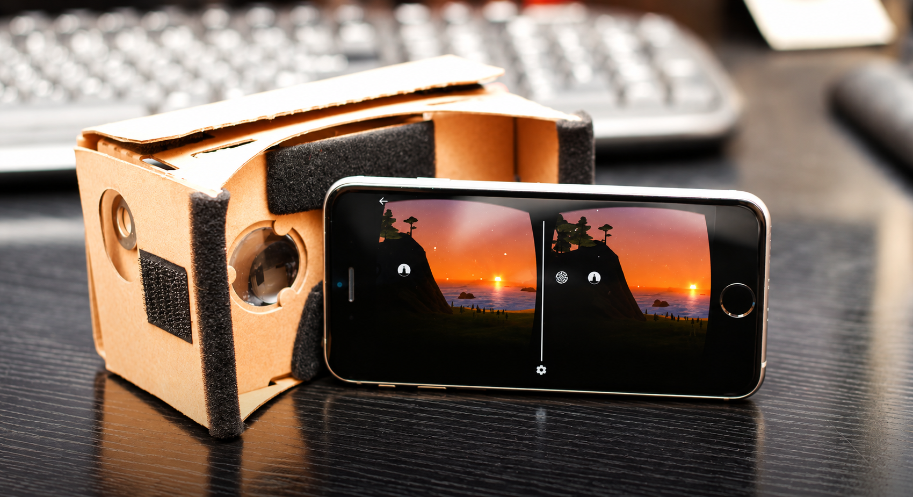
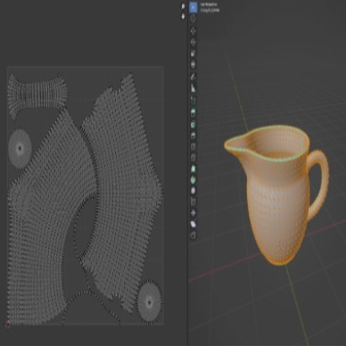
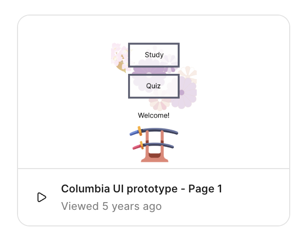

Interviews, interfaces, virtual worlds, rendering, and documentary storytelling have taught me to pay attention to the person on the other side of a system. Here are the individual projects behind that perspective.

HCI · May–Sep 2017
I developed a Unity3D VR game with two ways to explore: guided sightseeing and free navigation. I built the interface and modeled characters, underwater scenery, vegetation, and creatures in Maya. The project connected modeling with interaction choices, with a Windows executable and a mobile version for Google Cardboard on iPhone.
Game developer and 3D modeler
Explore the project ↗
Creative · Nov–Dec 2018
I independently combined a dancing 3D animation, a Unity interface, and an iPad projection pyramid. Moving from animation to a physical display meant designing both the digital material and the way a person would encounter it in space.
Independent creator: 3D animation, interface design, and projection setup
Explore the project ↗

Render / wireframeGraphics · Sep–Dec 2022
I wrote a C++ ray tracer for a Columbia graphics course, implementing shading, reflection, refraction, texture mapping, and mesh support. I added ambient, point, and area lights, antialiasing, soft shadows, and a bounding-volume hierarchy. The project made image construction concrete: each visible effect depended on geometry, material calculations, and code.
Independent C++ implementation
Explore the project ↗
HCI · Nov 2017–Jan 2018
I led the design of an anonymous community app, turning interviews and questionnaires into research findings, a requirements narrative, wireframes, and interface designs. The project brought together user research, visual communication, and the practical work of coordinating a creative team.
Team leader, project manager, photographer, and editor; research synthesis and interface design
Explore the project ↗
HCI & UX · Columbia · April 2023
I designed a snowboard-learning experience around a 58-response feature-priority survey, connecting step-by-step guidance, practice records, and personalized feedback in an interactive prototype.
User research · survey and poster design · analysis · interaction prototype
Explore the project ↗
HCI & UX · Figma archive · 2020–2021
A pair of early mobile interaction studies exploring how a compact interface can teach, organize everyday choices, and communicate system state—from Japanese study and quizzes to room lighting and drink preparation.
Interface exploration · interaction flows · Figma prototyping
Explore the project ↗
Creative · ZJNU studio: 2015–2018; Sichuan Radio and Television: Jan–Mar 2018
I worked across camera, sound, directing, interviewing, and editing in ZJNU studio productions, then interviewed doctors and edited episodes at Sichuan Radio and Television. The subjects ranged from cultural heritage to graduate employment and financial scams. My responsibilities varied by assignment, linking field recording with the construction of a narrative.
Camera, sound, directing, interviewing, and editing across different assignments; television interviewer and editor
Explore the project ↗